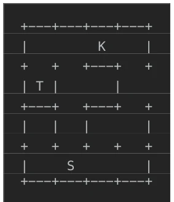

This paper attempts to give World Models a "check-up", using ASCII maze prediction to replace complex visual perception. The highlight lies in proposing a lightweight benchmark that separates "state prediction" from "navigation decision", making it as pure as MNIST. The authors found that equipping a Transformer with a 2D implicit spatial memory (Pseudo-Video Spatial-Memory) is much stronger than pure byte streams or unstructured auxiliary memory, achieving perfect accuracy on certain tasks. But this matter also has drawbacks: the maze is too simple, ASCII characters mapped to 2D implicit space are essentially a variant of symbolic reasoning, still far from true Embodied AI. The so-called "pseudo-video" is actually a latent variable buffer with spatial structure, do not expect it to handle pixel-level details. However, as a diagnostic tool, it indeed exposes LLM's shortcomings in internal state maintenance, worth using for hyperparameter tuning before expansion. Additionally, it emphasizes that language grounding requires support from persistent data structures, rather than relying solely on text descriptions. This is like installing a "RAM stick" for LLM, although it still can't run AAA titles, at least it can run basic instructions.
One obstacle on the path to Artificial General Intelligence (AGI) is the lack of true world modeling capabilities. Existing Large Language Models (LLMs) usually act as next-token predictors, where their persistent state is often external (e.g., prompt or tools), rather than an operable representation within the network [1, 4]. Although Vision-Language-Action (VLA) models [5] encode visual inputs, the architecture itself does not retain explicit, dynamically updatable spatial states. The previous AGI Maze framework [6] demonstrated LLM fragility on maze tasks, suggesting we need to test if prediction models trained from random initialization can learn internal structured states. Existing benchmarks often confuse perception and control, lacking transparent diagnosis of "action-conditioned dynamics". This paper aims to fill this gap, providing a compact testbed to verify if models can learn transferable action-conditioned dynamic rules, rather than rote memorization of layouts. This is like asking: Does the LLM truly understand where the "wall" is, or just memorized the word "wall"?
The overall process is based on a procedurally generated AGI Maze environment, constructing three prediction tasks: single-step transition, fixed-horizon sequence state prediction, and sequence text observation prediction. Data uses non-overlapping splits of source mazes to prevent overfitting. 1. **Byte-Transformer Baseline**: Pure GPT style, UTF-8 byte input, testing the learning capability of unstructured representations. 2. **Auxiliary Latent-Memory Transformer**: Adds unstructured memory units, serving as a capacity control, proving that simply increasing parameters is ineffective. 3. **Pseudo-Video Spatial-Memory Transformer**: Core innovation. Initializes a 2D implicit canvas (latent frame), mapping input map geometry into it. Action sequences update this canvas via a text encoder, subsequent frames generated via spatial attention. This is equivalent to building a "pseudo-video" working memory inside the Transformer, without intermediate state supervision, learning spatial dynamics solely through final position prediction targets. This architecture introduces spatial inductive bias (inductive bias) matching the input maze topology. It includes two read variants: full-text read and vision-only read, the latter forcing the model to rely on implicit spatial states rather than raw text, verifying the effectiveness of spatial memory.

Figure 1. 4x4 maze example: S – start (player), K – key, T – treasure (see [6] for more details)
Experiments are conducted on various maze families from 3x3 to 4x5, including dynamic mechanisms such as keys and rivers. Evaluation adopts strict byte-level exact match accuracy (greedy exact-target accuracy), rather than simple NLL. Results show that the Byte-Transformer baseline performs passably on simple tasks, but as horizon increases and mazes grow larger, accuracy drops significantly, indicating difficulty in learning general rules. The Auxiliary Memory Transformer, while able to perfectly fit the training set, performs worse than the baseline on the validation set, indicating unstructured memory cannot effectively encode states. In contrast, the Pseudo-Video Spatial-Memory Transformer achieves 100% validation accuracy on multiple sequence tasks, and also shows significant improvement in text trajectory prediction. Ablation experiments show that 2D spatial structure is the key to improving performance, rather than simple model capacity.